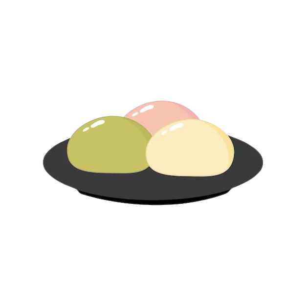

Mochi Recipe
Sweet rice cakes with various fillings like red bean paste or matcha.
Ingredients
- 1 cup (150g) glutinous rice flour (mochi flour or shiratama-ko)
- 1/4 cup (50g) sugar
- 1/4 teaspoon salt
- 1/2 cup (120ml) water
- Cornstarch or potato starch (for dusting)
Preparation Time
- Prep time: 10 minutes
- Cook time: 10-15 minutes
- Total time: ~25 minutes
Instructions
- Prepare the Mochi Dough:
- In a microwave-safe bowl, mix the glutinous rice flour, sugar, and salt together.
- Add water to the mixture and stir until smooth and well combined.
- Steam or Microwave the Dough:
- Microwave method: Cover the bowl loosely with plastic wrap and microwave on high for 1 minute, then stir. Repeat for 1-2 more times until the dough becomes thick and translucent.
- Stovetop method: Transfer the mixture to a heatproof bowl over simmering water (double boiler style). Stir continuously for 10-15 minutes until the dough thickens and becomes glossy.
- Cool and Shape the Mochi:
- Allow the mochi to cool slightly until it’s warm but not too hot to handle.
- Dust your work surface and hands with cornstarch or potato starch to prevent sticking.
- Divide the dough into small portions (about 1 to 1 1/2 tablespoons each) and shape them into small balls. Flatten them into disks if desired.
- Optional: Fill the Mochi:
- If desired, place a small spoonful of your favorite filling (e.g., sweet red bean paste, chocolate, or fruit) in the center of each portion of dough and pinch the edges together to seal. Shape into a ball or disk around the filling.
- Serve:
- Dust the mochi with more cornstarch to prevent sticking. Serve immediately or store in an airtight container at room temperature for up to 1 day.
Enjoy your chewy, soft, and slightly sweet mochi! Experiment with different fillings or colors for a festive touch!